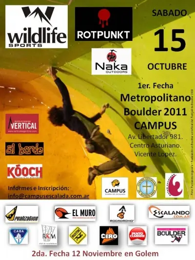

// FUERA DEL TRABAJO
Metropolitado de boulder
Era hora de probar como son los resultados de algún tiempo de entrenamiento. Nada mejor que una competencia oficial y en la casa.
16 de octubre de 2011 · 1 minuto de lectura

Con 30 competidores en la categoría, quedamos con gana de dar un poco más y un pegue que no salió. Sabiendo que era más que suficiente para subir unas cuantas posiciones.
Después de todo ya está marcado el piso y no se puede ser menos para la próxima.
| 16ro | |||
| 17to | Luciano | Cismondi | Campus |
| 18to |
Cómo siempre una buena tarde, muchas caras conocidas, otras no tanto y muy buena organización como es de costumbre en estos lugares.
Viajes relacionados

Cerro Champaquí
Llegar al punto más alto suele ser el objetivo, pero no deja de ser un objetivo relativo, es la derivada nula del entorno reducido.
Enero 2010
Paisajes Jujeños
Grises, marrones, verdes, naranjas, celestes, blancos y la falta de horizonte, son todos los colores que se pueden encontrar en el Norte Argentino.
Febrero 2009
Cajón del Azul | Trekking
Si hay un lugar para perderse es en el Cajón del Azul. Es más grande de lo que parece. Siempre queda algún lugar por conocer.
Enero 2008// EL SIGUIENTE PASO
TU PRODUCTO.
SU PRÓXIMA ETAPA.
Una primera conversación para entender el desafío y ver si puedo aportar valor.
↗ Hablemos de tu proyecto